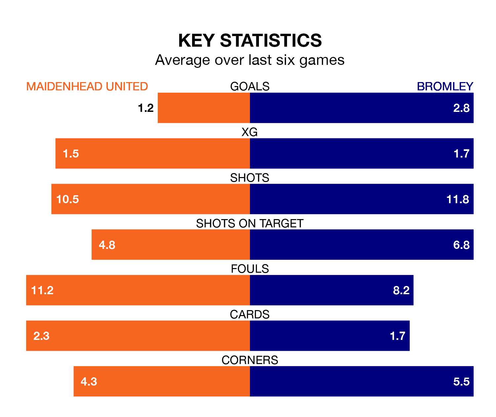

Bromley come to the York Road Stadium to play Maidenhead United on Saturday in excellent form, having collected 16 points from their last six games.
The visitors have won five and drawn one of their last six fixtures, while Maidenhead have two wins and three draws.
Bromley are second in the table after 27 games, of which they have won 16 and drawn seven, earning 55 points.
Maidenhead are 12 places behind the Ravens in 14th, with seven wins and 10 draws putting them on 31 points.
With 28 goals in 26 games so far this season, United are the league's joint-third-lowest scorers with 1.1 goals per game. But they are conceding fewer than average too, letting in 35 goals at a rate of 1.3 per game.
The away team, meanwhile, are above average scorers, with 1.8 goals per game, compared to a league average of 1.5. They have conceded 1.1 goals per game.
In Craig Alexander Ross, the hosts can rely on one of the league's safest pair of hands. He has kept eight clean sheets in his 26 appearances this season, and only two other 'keepers – Barnet's Laurie Walker and Halifax Town's Samuel William Johnson – have been able to prevent the opposition scoring on more occasions in National League.
In Bromley's net, Grant Ashley Smith has seven clean sheets in 26 games.
In the last five years, Maidenhead and Bromley have played each other on eight occasions. They won two each, and they drew four times.
On average, Maidenhead scored 1.1 goals and the Ravens 1.4 in those matches.
Their last meeting was on September 9, when Bromley won 4-1 at home.
Maidenhead's last match was on December 26, a 2-0 loss against Wealdstone.
Bromley beat Ebbsfleet United 5-1 last time out, on December 30, with Ben Krauhaus (two), Alex Kirk, Michael Cheek and Olufela Olomola on the scoresheet.
Updated: 10:36, 03/01/24